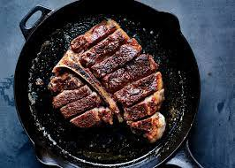

!DOCTYPE HTML>
Porterhouse steak recipe
Porterhouse steak

Description
The Porterhouse steak is an amazing piece of meat that every person should try atleast once in their lifetime to experience it's bold flavors. The secret to this recipe is really in the tools.You must have a cast iron skillet or fancy matfer pan if you want to cook this steak to perfection and not waste your money. Also make sure you have flames, electric stoves just wont cut it for this piece of meat.
Inridients
- Porterhouse steak from the butcher
- Cast iron skillet or matfer pan
- Salt and Pepper
- 3/4 of a stick of butter
- Thyme
- 3 cloves of garlic
Steps
- Have meat be room temperature and patted down dry
- Preheat skillet/pan until water droplets move around in balls when you test the heat
- Season steak with salt and pepper
- Put grapeseed oil into pan
- Put in steak and cook on one side for 4 min then flip
- Cook other side for 4 min
- Add in thyme, cloves of garlic, and butter
- Start basting the steak in the buttery juices in the pan
- After basting atleast 30 times take out your steak and rest it ontop of a spoon
- Serve and enjoy